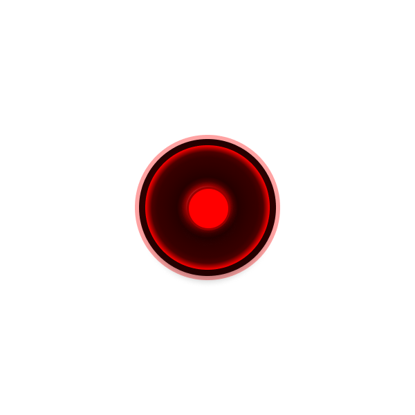
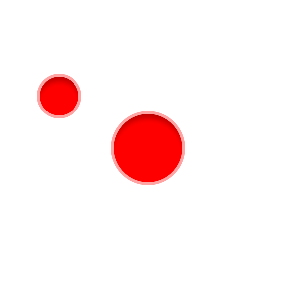
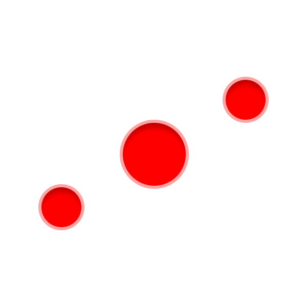
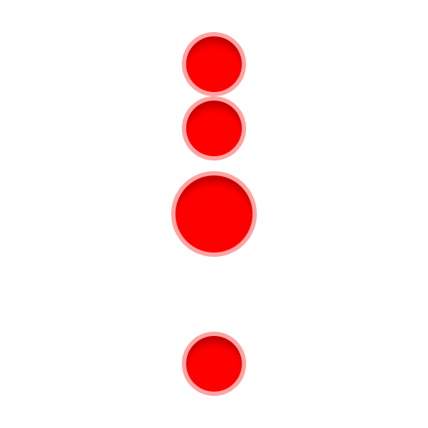
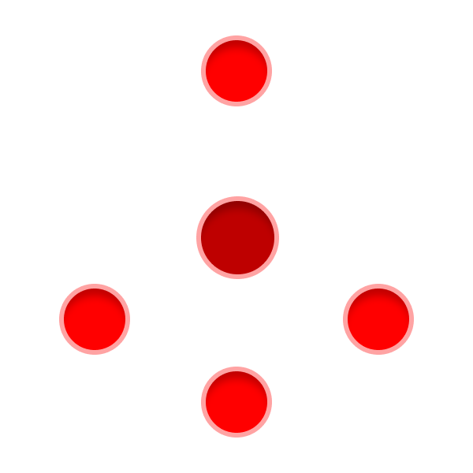

The Player's Guide to
Ten Candles
The world is dark.
But we are alive.
Ten Candles is a simple tabletop role-playing game.
It's a tragic horror cooperative storytelling game about people trying to survive and fight against the evil and darkness that will inevitably and most certainly end their lives.
Though the survivors will most certainly perish, the story told isn't one of death, but one of hope, desperation, and the choices people make in the face of their preordained fate.
Many may question the value of a nightmarish game where you can't win. However, Ten Candles isn't about winning: It's about telling a story about people and who they really are.
As players play Ten Candles, they'll explore what remains of humanity, overcome challenges, struggle to not succumb to madness, and, maybe, uncover the truth behind their now unwelcoming world.
How the World Will End
The rules are very simple
There's a lot of stuff i'm not done yet, so I'll use these commentary boxes to tell you what I plan to have happen
jquery practice
e.g.: This right here is just for me to test out and see how jquery events work.
Conflicts
The only mechanic the game really has revolves around dice: If you roll at least one "6", you succeed. If you don't, you fail. I plan on animating a diceroll, a button to call a diceroll, and maybe passing arguments based on what side is "up".
Also, if you roll a "1", I'll play a special animation and maybe use Jquery's hide() function to show that you lose that dice.
Narrative Control
At some point in the game, the players have to roll against the game master. Certain things happen depending on who gets more "6"s.
Your Resources
Your struggle to survive...
Here are some of the assets I plan to use
Your Traits
click to "burn"
click me to generate an number






These are supposed to be "paper cards" that burn away to show a message underneath
Also supposed to be paired with another set of dice to show a "reroll" mechanic
Tentacle z-index test
Wall of eyes test
I might try to implement this and throw it into the background
I plan on making some assets in Figma and then throwing them onto this website at z-index=-1. The idea is that I add more of these weird tentacles and eyes as you scroll lower down the page.
Your Moment
Your Brink